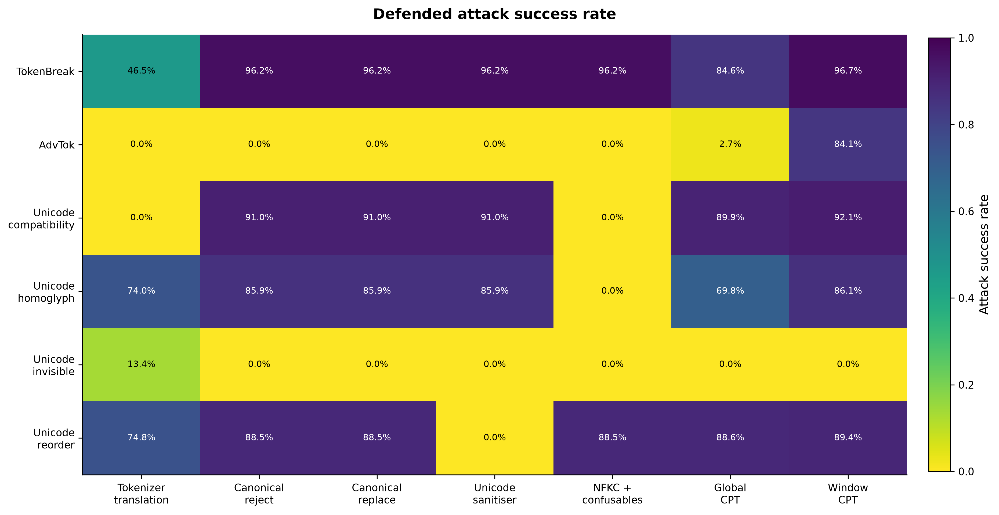
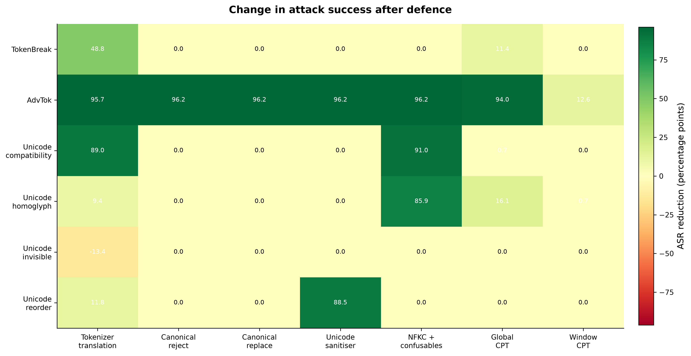
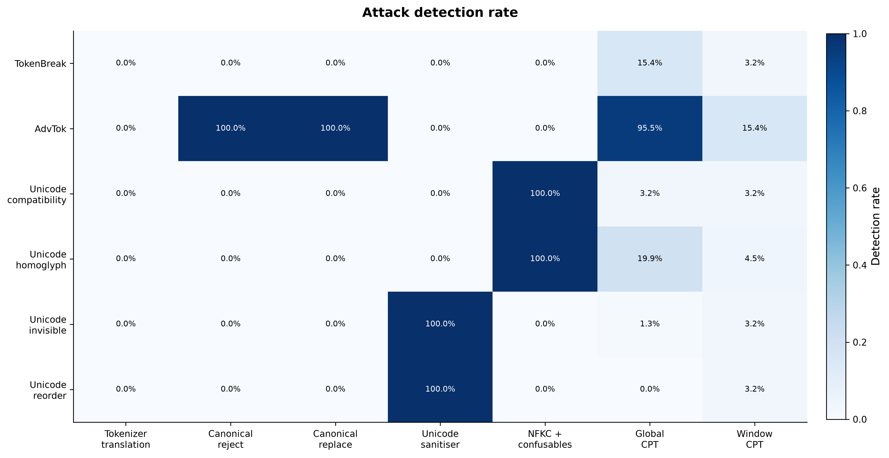
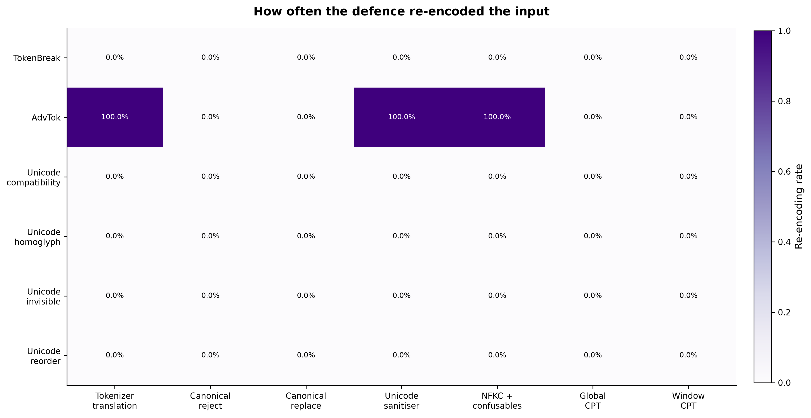
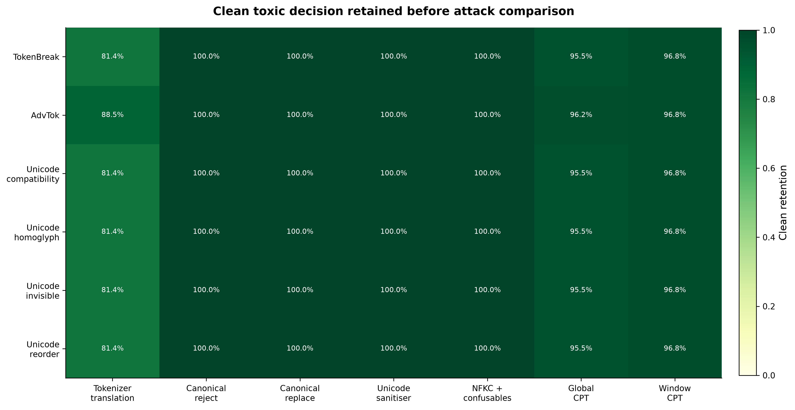
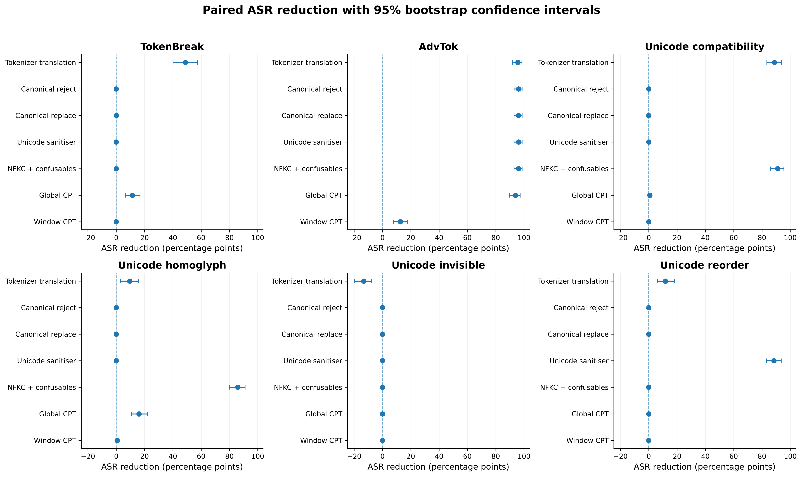
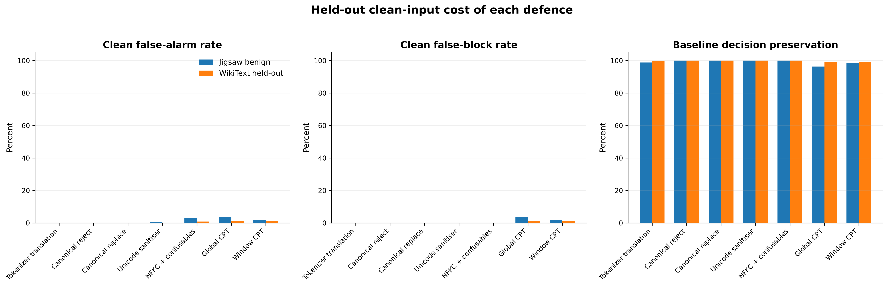
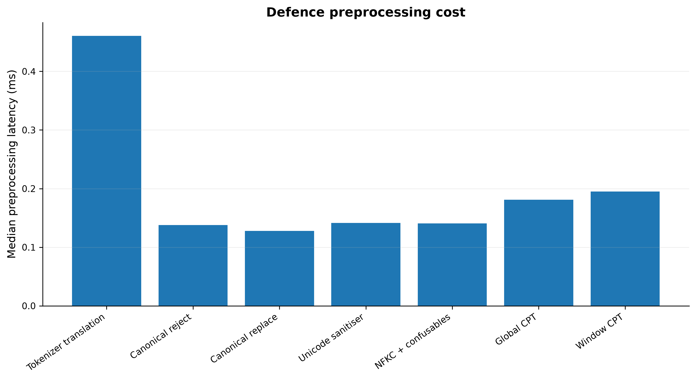
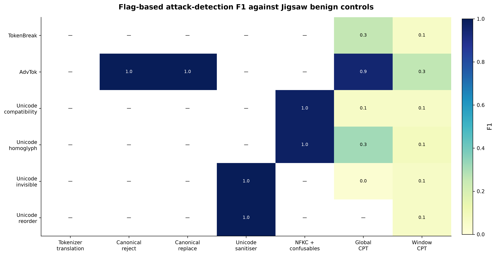
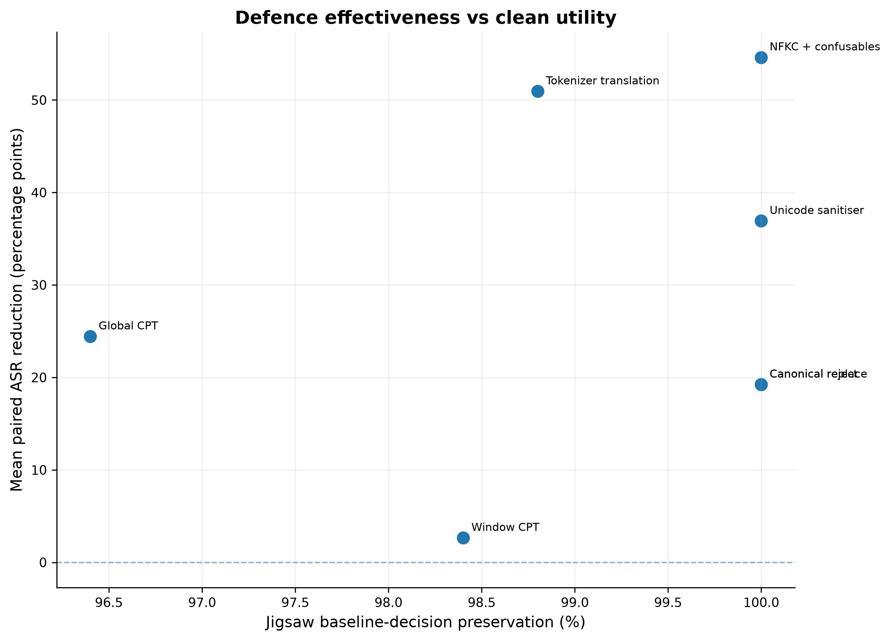

For each retained sample:
clean + defence → toxic
then compare
attacked without defence
against
attacked + defence.
| Attack | Defence | N retained | Undefended ASR | Defended ASR | ASR reduction | 95% CI reduction | Detect | Block | Clean keep | Re-encode |
|---|---|---|---|---|---|---|---|---|---|---|
| TokenBreak | Tokenizer translation | 127 | 95.3% | 46.5% | 48.8 pp | [40.2, 57.5] pp | 0.0% | 0.0% | 81.4% | 0.0% |
| TokenBreak | Canonical reject | 156 | 96.2% | 96.2% | 0.0 pp | [0.0, 0.0] pp | 0.0% | 0.0% | 100.0% | 0.0% |
| TokenBreak | Canonical replace | 156 | 96.2% | 96.2% | 0.0 pp | [0.0, 0.0] pp | 0.0% | 0.0% | 100.0% | 0.0% |
| TokenBreak | Unicode sanitiser | 156 | 96.2% | 96.2% | 0.0 pp | [0.0, 0.0] pp | 0.0% | 0.0% | 100.0% | 0.0% |
| TokenBreak | NFKC + confusables | 156 | 96.2% | 96.2% | 0.0 pp | [0.0, 0.0] pp | 0.0% | 0.0% | 100.0% | 0.0% |
| TokenBreak | Global CPT | 149 | 96.0% | 84.6% | 11.4 pp | [6.7, 16.8] pp | 15.4% | 15.4% | 95.5% | 0.0% |
| TokenBreak | Window CPT | 151 | 96.7% | 96.7% | 0.0 pp | [0.0, 0.0] pp | 3.2% | 3.2% | 96.8% | 0.0% |
| AdvTok | Tokenizer translation | 138 | 95.7% | 0.0% | 95.7 pp | [92.0, 98.6] pp | 0.0% | 0.0% | 88.5% | 100.0% |
| AdvTok | Canonical reject | 156 | 96.2% | 0.0% | 96.2 pp | [92.9, 98.7] pp | 100.0% | 100.0% | 100.0% | 0.0% |
| AdvTok | Canonical replace | 156 | 96.2% | 0.0% | 96.2 pp | [92.9, 98.7] pp | 100.0% | 0.0% | 100.0% | 0.0% |
| AdvTok | Unicode sanitiser | 156 | 96.2% | 0.0% | 96.2 pp | [92.9, 98.7] pp | 0.0% | 0.0% | 100.0% | 100.0% |
| AdvTok | NFKC + confusables | 156 | 96.2% | 0.0% | 96.2 pp | [92.9, 98.7] pp | 0.0% | 0.0% | 100.0% | 100.0% |
| AdvTok | Global CPT | 150 | 96.7% | 2.7% | 94.0 pp | [90.0, 97.3] pp | 95.5% | 95.5% | 96.2% | 0.0% |
| AdvTok | Window CPT | 151 | 96.7% | 84.1% | 12.6 pp | [7.9, 17.9] pp | 15.4% | 15.4% | 96.8% | 0.0% |
| Unicode compatibility | Tokenizer translation | 127 | 89.0% | 0.0% | 89.0 pp | [83.5, 93.7] pp | 0.0% | 0.0% | 81.4% | 0.0% |
| Unicode compatibility | Canonical reject | 156 | 91.0% | 91.0% | 0.0 pp | [0.0, 0.0] pp | 0.0% | 0.0% | 100.0% | 0.0% |
| Unicode compatibility | Canonical replace | 156 | 91.0% | 91.0% | 0.0 pp | [0.0, 0.0] pp | 0.0% | 0.0% | 100.0% | 0.0% |
| Unicode compatibility | Unicode sanitiser | 156 | 91.0% | 91.0% | 0.0 pp | [0.0, 0.0] pp | 0.0% | 0.0% | 100.0% | 0.0% |
| Unicode compatibility | NFKC + confusables | 156 | 91.0% | 0.0% | 91.0 pp | [85.9, 95.5] pp | 100.0% | 0.0% | 100.0% | 0.0% |
| Unicode compatibility | Global CPT | 149 | 90.6% | 89.9% | 0.7 pp | [0.0, 2.0] pp | 3.2% | 3.2% | 95.5% | 0.0% |
| Unicode compatibility | Window CPT | 151 | 92.1% | 92.1% | 0.0 pp | [0.0, 0.0] pp | 3.2% | 3.2% | 96.8% | 0.0% |
| Unicode homoglyph | Tokenizer translation | 127 | 83.5% | 74.0% | 9.4 pp | [3.1, 15.7] pp | 0.0% | 0.0% | 81.4% | 0.0% |
| Unicode homoglyph | Canonical reject | 156 | 85.9% | 85.9% | 0.0 pp | [0.0, 0.0] pp | 0.0% | 0.0% | 100.0% | 0.0% |
| Unicode homoglyph | Canonical replace | 156 | 85.9% | 85.9% | 0.0 pp | [0.0, 0.0] pp | 0.0% | 0.0% | 100.0% | 0.0% |
| Unicode homoglyph | Unicode sanitiser | 156 | 85.9% | 85.9% | 0.0 pp | [0.0, 0.0] pp | 0.0% | 0.0% | 100.0% | 0.0% |
| Unicode homoglyph | NFKC + confusables | 156 | 85.9% | 0.0% | 85.9 pp | [80.1, 91.0] pp | 100.0% | 0.0% | 100.0% | 0.0% |
| Unicode homoglyph | Global CPT | 149 | 85.9% | 69.8% | 16.1 pp | [10.7, 22.1] pp | 19.9% | 19.9% | 95.5% | 0.0% |
| Unicode homoglyph | Window CPT | 151 | 86.8% | 86.1% | 0.7 pp | [0.0, 2.0] pp | 4.5% | 4.5% | 96.8% | 0.0% |
| Unicode invisible | Tokenizer translation | 127 | 0.0% | 13.4% | -13.4 pp | [-19.7, -7.9] pp | 0.0% | 0.0% | 81.4% | 0.0% |
| Unicode invisible | Canonical reject | 156 | 0.0% | 0.0% | 0.0 pp | [0.0, 0.0] pp | 0.0% | 0.0% | 100.0% | 0.0% |
| Unicode invisible | Canonical replace | 156 | 0.0% | 0.0% | 0.0 pp | [0.0, 0.0] pp | 0.0% | 0.0% | 100.0% | 0.0% |
| Unicode invisible | Unicode sanitiser | 156 | 0.0% | 0.0% | 0.0 pp | [0.0, 0.0] pp | 100.0% | 0.0% | 100.0% | 0.0% |
| Unicode invisible | NFKC + confusables | 156 | 0.0% | 0.0% | 0.0 pp | [0.0, 0.0] pp | 0.0% | 0.0% | 100.0% | 0.0% |
| Unicode invisible | Global CPT | 149 | 0.0% | 0.0% | 0.0 pp | [0.0, 0.0] pp | 1.3% | 1.3% | 95.5% | 0.0% |
| Unicode invisible | Window CPT | 151 | 0.0% | 0.0% | 0.0 pp | [0.0, 0.0] pp | 3.2% | 3.2% | 96.8% | 0.0% |
| Unicode reorder | Tokenizer translation | 127 | 86.6% | 74.8% | 11.8 pp | [6.3, 18.1] pp | 0.0% | 0.0% | 81.4% | 0.0% |
| Unicode reorder | Canonical reject | 156 | 88.5% | 88.5% | 0.0 pp | [0.0, 0.0] pp | 0.0% | 0.0% | 100.0% | 0.0% |
| Unicode reorder | Canonical replace | 156 | 88.5% | 88.5% | 0.0 pp | [0.0, 0.0] pp | 0.0% | 0.0% | 100.0% | 0.0% |
| Unicode reorder | Unicode sanitiser | 156 | 88.5% | 0.0% | 88.5 pp | [83.3, 93.6] pp | 100.0% | 100.0% | 100.0% | 0.0% |
| Unicode reorder | NFKC + confusables | 156 | 88.5% | 88.5% | 0.0 pp | [0.0, 0.0] pp | 0.0% | 0.0% | 100.0% | 0.0% |
| Unicode reorder | Global CPT | 149 | 88.6% | 88.6% | 0.0 pp | [0.0, 0.0] pp | 0.0% | 0.0% | 95.5% | 0.0% |
| Unicode reorder | Window CPT | 151 | 89.4% | 89.4% | 0.0 pp | [0.0, 0.0] pp | 3.2% | 3.2% | 96.8% | 0.0% |










Two clean corpora are used: 5,000 unseen WikiText lines and 250 Jigsaw comments labelled benign. The WikiText rows used to calibrate CPT are not reused here.
| Corpus | Defence | False alarm | False block | Decision preservation | Mean |ΔP| | Median latency |
|---|---|---|---|---|---|---|
| Jigsaw benign | Tokenizer translation | 0.0% | 0.0% | 98.8% | 0.0126 | 0.521 ms |
| Jigsaw benign | Canonical reject | 0.0% | 0.0% | 100.0% | 0.0000 | 0.138 ms |
| Jigsaw benign | Canonical replace | 0.0% | 0.0% | 100.0% | 0.0000 | 0.174 ms |
| Jigsaw benign | Unicode sanitiser | 0.4% | 0.0% | 100.0% | 0.0000 | 0.202 ms |
| Jigsaw benign | NFKC + confusables | 3.2% | 0.0% | 100.0% | 0.0000 | 0.156 ms |
| Jigsaw benign | Global CPT | 3.6% | 3.6% | 96.4% | 0.0000 | 0.261 ms |
| Jigsaw benign | Window CPT | 1.6% | 1.6% | 98.4% | 0.0000 | 0.277 ms |
| WikiText held-out | Tokenizer translation | 0.0% | 0.0% | 99.9% | 0.0031 | 0.869 ms |
| WikiText held-out | Canonical reject | 0.0% | 0.0% | 100.0% | 0.0000 | 0.283 ms |
| WikiText held-out | Canonical replace | 0.0% | 0.0% | 100.0% | 0.0000 | 0.304 ms |
| WikiText held-out | Unicode sanitiser | 0.1% | 0.0% | 100.0% | 0.0000 | 0.556 ms |
| WikiText held-out | NFKC + confusables | 0.8% | 0.0% | 100.0% | 0.0000 | 0.469 ms |
| WikiText held-out | Global CPT | 1.0% | 1.0% | 99.0% | 0.0000 | 0.490 ms |
| WikiText held-out | Window CPT | 1.0% | 1.0% | 99.0% | 0.0000 | 0.534 ms |
reencode = 100% means the attacker-supplied token IDs
were discarded because the defence reconstructed input from the
visible string.
That is an interface effect, not attack detection.
The detection-rate and re-encoding plots must therefore be read
alongside the defended-ASR plot.
These results currently establish the main experiment for one WordPiece toxicity classifier. They do not yet establish cross-tokenizer or cross-model generality. Those are separate experiments.